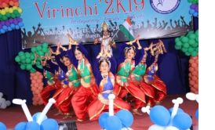
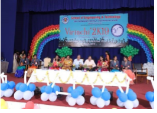

SRI PADMAVATI MAHILA VISVAVIDYALAYAM
(WOMEN'S UNIVERSITY)
Tirupati, Andhra Pradesh - India
Govt. State Level University, Recognized by UGC (Under the act of 1956)

ABOUT SPMVV ABOUT SOET COURSES OFFERED GALARY CONTACT US
 School of Engineering and Technology, SPMVV organised a two-day technocrat VIRINCHI
2K19 fest from 09 to 10March 2019.
VIRINCHI 2K19 is a brain child ofProf. A. Ramakrishna Rao garu.
The success of VIRINCHI 2k19 has been attributed to highly energetic and electrical students of final year Btech supported by students of 3rd & 2nd years with the motivation andconstant encouragement from our beloved director Prof. A. Ramakrishna Rao, InchargeVC Prof. V. Uma and Registrar Prof. D.M. Mamatha.
A 09 member student committee was formed headed by ChairpersonProf. A. Ramakrishna Rao garu , Faculty Convener D.J.Anusha faculty Co Convener P.Aravinda Keerthi Student Core team P.Keerthana Rao, Ramya,Divya and Lakshmi prasanna.
Morethan 1200 students from various engineering colleges from combined states of Andhra & Telangana, have registered to participate in VIRINCHI 2k19.
Techincal events like slide swapper, poster pitch, google hunt, quizophile, crypt ur mind, crack brain, trail blazer, mind fizz,technical paper presentation
non technical events like rangoli, mehandi, standup comedy, music and dance competitions, miss virinchi,installaations
were conducted